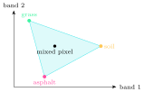

weighted by abundances
weighted by abundances  , ; solving the constrained least-squares problem gives sub-pixel fractions instead of a single label.
, ; solving the constrained least-squares problem gives sub-pixel fractions instead of a single label.Method
With  bands and endmembers (), :
bands and endmembers (), :
- unconstrained solution ;
- sum-to-one only: closed form with a Lagrange multiplier;
- fully constrained (FCLS): quadratic programming.
Endmembers come from libraries, field spectra, or the image itself (pure pixels at the vertices of the data cloud's simplex, e.g. N-FINDR, vertex component analysis). The residual flags missing endmembers.
Example
A 30 m pixel with 60% grass, 30% soil, 10% road: . Fraction maps of impervious surfaces or vegetation cover are produced this way from Landsat.
Picture

Mixed pixels lie inside the simplex of the endmembers; their barycentric coordinates are the abundances.
Intuition
A pixel is a smoothie: knowing the taste of each fruit, the taste of the mix tells the proportions.
Pitfall
Mixing is linear only when materials sit side by side; intimate mixtures (sand grains) and multiple scattering in canopies are non-linear, and endmember variability (many "grasses") blurs the estimates.